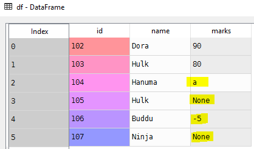
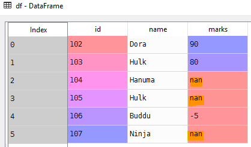

Unfortunately, it is very common in data analysis that the input data is not perfect, and it often requires cleaning.
import pandas as pd
# List of student tuples with id,name and marks
students = [(102, 'Dora', 90), (103, 'Hulk', 80),
(104, 'Hanuma', 'a'), (105, 'Hulk',),
(106, 'Buddu', -5), (107, 'Ninja',)]
# Create a data frame from records
df = pd.DataFrame.from_records(students)
# Set column names
df.columns = ['id', 'name', 'marks']
# Empty values
df['marks'].value_counts()a 1
-5 1
90 1
80 1Using to_numeric convert all the strings to numeric data type
# Try to convert all the elements in the column to numeric
pd.to_numeric(df['marks'])ValueError: Unable to parse string "a" at position 2# Force pandas to convert String or None to NaN
pd.to_numeric(df['marks'], errors='coerce')0 90.0
1 80.0
2 NaN
3 NaN
4 -5.0
5 NaN# Update the marks column
df['marks'] = pd.to_numeric(df['marks'], errors='coerce')